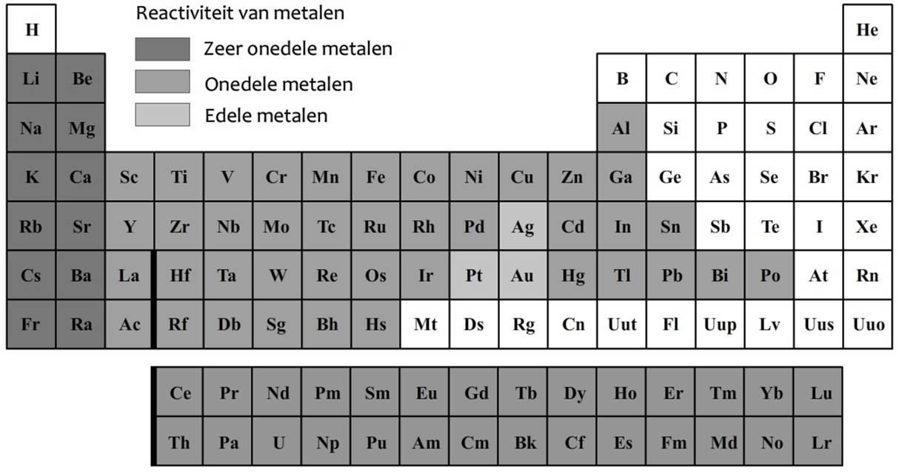

Jullie hebben het eerste deel van het gebied overleefd.
De eerste sectoren zijn onderzocht, de eerste buit is verzameld en het is nu duidelijk: dit terrein zit voller geheimen dan eerst gedacht.
Maar vanaf hier verandert alles.
Tot nu toe kregen jullie de coördinaten bijna cadeau.
Vanaf nu zal het netwerk zich minder makkelijk prijsgeven.
Nieuwe signalen zijn onderschept, verborgen sectoren worden zichtbaar
en ergens tussen deze punten liggen nog locaties die een groot verschil kunnen maken in de eindstrijd.
Onze bronnen bevestigen het volgende:
Vanaf dit checkpoint krijgen jullie toegang tot de volgende coördinaten.
Kies verstandig.
Niet elke patrouille zal sterk genoeg zijn om alles te halen.
Niet elke omweg is de moeite waard.
Maar één ding is zeker:
Wie vanavond wil winnen, zal nu moeten beslissen hoeveel risico hij durft nemen.
Hieronder vinden jullie de coördinaten voor het tweede deel van de operatie.
Code: ...-- -.... / -.... ....- // ..... ....- / .---- -....
Hint: Oude signalen worden soms nog in morse verzonden.
Code: 83 / 25 // 15 / 84
Hint: In deze sector staat alles achterstevoren.
Code:
(2³ x 5) - √1(3⁴ - 19) - (8 ÷ 2)(5² x 2) + (√16 ÷ 2)(3² x 2) - (√81 ÷ 3)Hint: Werk elke berekening uit. De antwoorden vormen samen de coördinaat.
Code: Rb / Gd // Cd / O
Hint: Deze sector is opgeslagen volgens een chemische tabel.
Code: XXXVIII / XVI // XLV / LXX
Hint: Sommige oude systemen gebruiken nog Romeinse cijfers.
Code: 100100 / 1000100 // 101110 / 101100
Hint: Het systeem spreekt hier enkel in nullen en enen.
Computers rekenen met een binair systeem. Dat betekent dat ze alleen werken met de cijfers 0 en 1.
Elke positie stelt een macht van 2 voor:
Om een binair getal om te zetten naar een normaal getal tel je de waarden van de 1’en op.
Voorbeeld:
1010
= (1 x 8) + (0 x 4) + (1 x 2) + (0 x 1)
= 10
Zo kan je ook langere binaire getallen omzetten naar gewone cijfers.

Werk samen met jullie patrouille, gebruik jullie hoofd en kies verstandig welke punten jullie nog willen bezoeken.
Want hoe sterker jullie voorbereid zijn…
hoe groter de kans dat jullie vanavond Zozimus controleren.